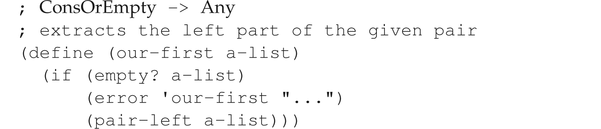
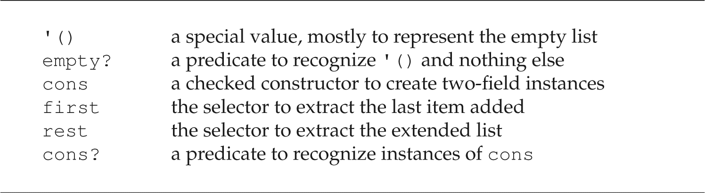

8.2 What Is '(), What Is cons
Let’s step back for a moment and take a close look at '() and cons. As mentioned, '() is just a constant. When compared to constants such as 5 or "this is a string", it looks more like a function name or a variable; but when compared with #true and #false, it should be easy to see that it really is just BSL’s representation for empty lists.
As for our evaluation rules, '() is a new kind of atomic value, distinct from any other kind: numbers, Booleans, strings, and so on. It also isn’t a compound value, like Posns. Indeed, '() is so unique it belongs in a class of values all by itself. As such, this class of values comes with a predicate that recognizes only '() and nothing else:
; Any -> Boolean
; is the given value '()
(define (empty? x) …)
Like all predicates, empty? can be applied to any value from the universe of BSL values. It produces #true precisely when it is applied to '():
> (empty? '())
#true
> (empty? 5)
#false
> (empty? "hello world")
#false
> (empty? (cons 1 '()))
#false
> (empty? (make-posn 0 0))
#false
Next we turn to cons. Everything we have seen so far suggests that cons is a constructor just like those introduced by structure type definitions. More precisely, cons appears to be the constructor for a two-field structure: the first one for any kind of value and the second one for any list-like value. The following definitions translate this idea into BSL:
(define-struct pair [left right])
; A ConsPair is a structure:
; (make-pair Any Any).
; Any Any -> ConsPair
(define (our-cons a-value a-list)
(make-pair a-value a-list))
The only catch is that our-cons accepts all possible BSL values for its second argument and cons doesn’t, as the following experiment validates:
> (cons 1 2)
cons:second argument must be a list, but received 1 and 2
Put differently, cons is really a checked function, the kind discussed in chapter 6, which suggests the following refinement:
; A ConsOrEmpty is one of:
; -- '()
; -- (make-pair Any ConsOrEmpty)
; interpretation ConsOrEmpty is the class of all lists
; Any Any -> ConsOrEmpty
(define (our-cons a-value a-list)
(cond
[(empty? a-list) (make-pair a-value a-list)]
[(pair? a-list) (make-pair a-value a-list)]
[else (error "cons: second argument …")]))
If cons is a checked constructor function, you may be wondering how to extract the pieces from the resulting structure. After all, Chapter 5 says that programming with structures requires selectors. Since a cons structure has two fields, there are two selectors: first and rest. They are also easily defined in terms of our pair structure:

Stop! Define our-rest.
If your program can access the structure type definition for pair, it is easy to create pairs that don’t contain '() or another pair in the right field. Whether such bad instances are created intentionally or accidentally, they tend to break functions and programs in strange ways. BSL therefore hides the actual structure type definition for cons to avoid these problems. Chapter 16.2 demonstrates one way that your programs can hide such definitions, too, but for now, you don’t need this power.
Figure 46 summarizes this section. The key insight is that '() is a unique value and that cons is a checked constructor that produces list values. Furthermore, first, rest, and cons? are merely distinct names for the usual predicate and selectors. What this chapter teaches, then, is not a new way of creating data but a new way of formulating data definitions.

Figure 46: List primitives